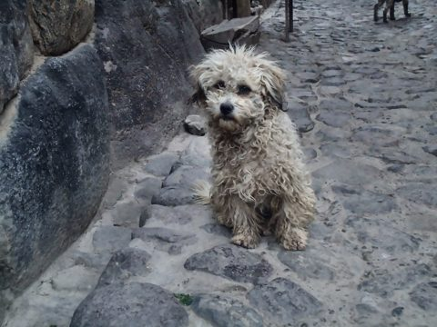
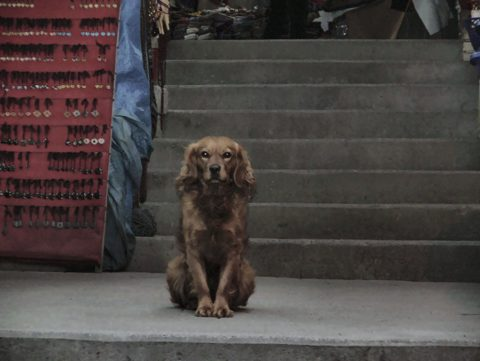
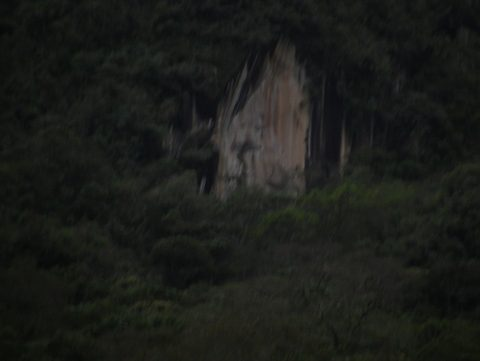

川向こうの石切り場から運ぶ途中で、巨大なピンクの石が置き去りにされています。
オリャンタイタンボは、当初の町割りのまま今も人が住む数少ないインカの町のひとつです。町の上には、主にパチャクテクの時代に建てられ、スペイン人到来時にも未完成だった神殿要塞がそびえます。その「六枚岩の壁」は、ウルバンバ川の対岸にあるカチカタ石切り場から引いてきたピンクの流紋岩でできています。考古学者ジャン＝ピエール・プロッツェンは、使われた傾斜路と道具を研究しました。
でも……研究者は、粗い石組みと精緻な石組みはインカの建設段階の違いだと推定しています。一部の愛好家は、それらがはるかに古い別々の建設段階ではないかと考えています。
こちら側にも岩があるのに、なぜ川を越えて石を運んだのでしょう？
地図で見る: Temple Hill / Six Monoliths, Ollantaytambo
石工のテーマ：「誰が誰に教えたのか」ティワナクから植民地時代のクスコまで、石から石へと続く物語。
ヤニのメモ
オリャンタイタンボとアグアス・カリエンテスの犬
夕方。暗くなっていく村の古い石畳の路地を歩いた。小さく汚れた白いプードルがついて来た。野良犬のように後ろをとぼとぼ歩くのではなく、迷路のような路地の先に何度も現れては座り、じっと見つめた。3度目に私たちは近づいた。犬は首を回しただけで、見つめ続けた。狂犬病が頭をよぎり、触る勇気はなかった。犬というよりロボットのように感じた。
 オリャンタイタンボの石畳の路地にいた、プードルに似た小さな白い犬。2011年8月20日17時30分（カメラのタイムスタンプ）。写真：撮影者の記録なし。写真は縮小のみ。
オリャンタイタンボの石畳の路地にいた、プードルに似た小さな白い犬。2011年8月20日17時30分（カメラのタイムスタンプ）。写真：撮影者の記録なし。写真は縮小のみ。
補正版（色・シャープネス・解像度）。内容は変更していない。翌日、2011年8月21日の夕方、私たちはマチュピチュのふもとのアグアス・カリエンテスにいた。私は望遠で山の地肌が見える部分を撮っていた。そこに規則的な模様が見える気がしたからだ。山腹に犬のシルエットが見え、ジャニーナに「あそこに昨日の犬がいる」と言った。ジャニーナは見て言った。「あれはその犬じゃない。その犬ならすぐ隣にいる」。彼女が指さしたのは、階段に座り、同じようにじっと見つめている銅色の野良犬だった。王族のように堂々としていた。撫でようとすると去ってしまい、二度と見かけなかった。写真のタイムスタンプはペルー時間で17時42分〜17時44分ごろ。
 アグアス・カリエンテスの階段にいた銅色の犬。2011年8月21日、ペルー時間17時43分ごろ（ビデオカメラの時計は8時間進んでいた）。写真：撮影者の記録なし。写真は縮小のみ。
アグアス・カリエンテスの階段にいた銅色の犬。2011年8月21日、ペルー時間17時43分ごろ（ビデオカメラの時計は8時間進んでいた）。写真：撮影者の記録なし。写真は縮小のみ。
補正版（色・シャープネス・解像度）。内容は変更していない。 山頂と、その下にある三角形の岩肌の露出部。アグアス・カリエンテス、2011年8月21日、ペルー時間17時44分ごろ。写真：撮影者の記録なし。写真は縮小のみ。
山頂と、その下にある三角形の岩肌の露出部。アグアス・カリエンテス、2011年8月21日、ペルー時間17時44分ごろ。写真：撮影者の記録なし。写真は縮小のみ。 補正版（色・シャープネス・解像度）。内容は変更していない。
補正版（色・シャープネス・解像度）。内容は変更していない。
同じ岩肌の露出部を近くから。ペルー時間17時42分ごろ。写真：撮影者の記録なし。写真は縮小のみ。 補正版（色・シャープネス・解像度）。内容は変更していない。
補正版（色・シャープネス・解像度）。内容は変更していない。1か月後、フィンランドで両親に写真を見せた。S 母は山の三角形のむき出しの地肌を見て、そこに2匹の犬がシルエットとしていると言った。今は私にも見えた。
L 母はアルミホイル帽子の火にさらに油を注いだ。教師をしている母の姉妹が、古代の神々は重要な場所と人を見守るために犬を残した、と読んだことがあったのだ。
本当にそうなのかは、私にはわからない。
出来事はヤニ（Jani Korpi）のメモで、岩の中の姿は推測です。L オリャンタイタンボの向かいにそびえるピンクイユナ山の岩に、地元の言い伝えはトゥヌパ、すなわちビラコチャンの姿を見ている（Mincetur、目録 13575）。この読み方は1990年代にエロリエタ・サラサール兄弟の本を通じて広まり、それより古い記述には見られない（Vecchio 2023）。
 オリャンタイタンボのピンクイユナ山、2011年8月20日、ペルー時間15時45分ごろ（ビデオカメラの時計は8時間進んでいた）。L 地元の言い伝えは、この山の岩にトゥヌパ、すなわちビラコチャンの顔を見ている（Mincetur、目録 13575）。写真：撮影者の記録なし。写真は縮小のみ。
オリャンタイタンボのピンクイユナ山、2011年8月20日、ペルー時間15時45分ごろ（ビデオカメラの時計は8時間進んでいた）。L 地元の言い伝えは、この山の岩にトゥヌパ、すなわちビラコチャンの顔を見ている（Mincetur、目録 13575）。写真：撮影者の記録なし。写真は縮小のみ。 補正版（色・シャープネス・解像度）。内容は変更していない。
補正版（色・シャープネス・解像度）。内容は変更していない。